نافورة بارتفاع 22 متراً في 48 ساعة
قبل كأس دبي العالمي 2010 طلبت منا ميدان تركيب نافورة مضاءة بارتفاع 22 متراً عند البوت هاوس، في وقت قياسي مدته 48 ساعة. وأنجزناها.
نصمم وننفذ ونورّد ونصون المسابح والنوافير للفنادق والمراكز التجارية والمطورين وأصحاب الفلل. من نوافير قصر الإمارات إلى شلال الغواصين في دبي مول، وأعمال المسابح الكهروميكانيكية في برج العرب.

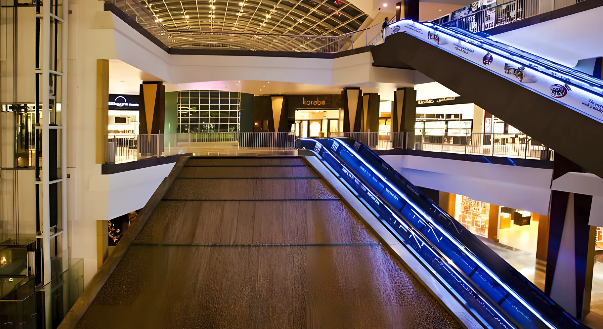
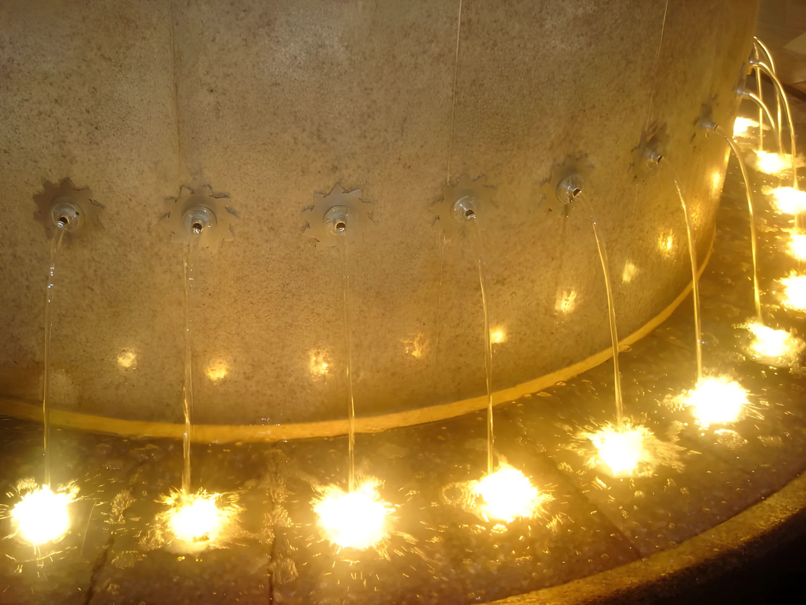
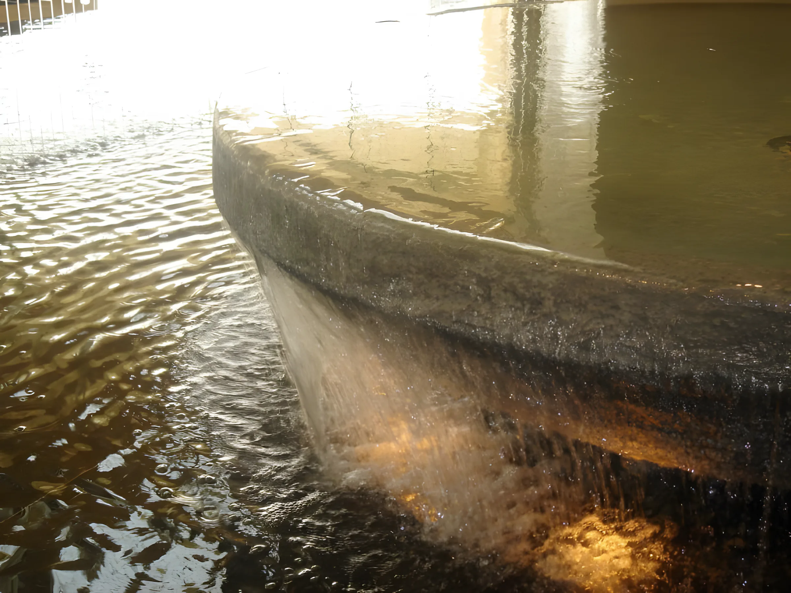
اثنا عشر مشروعاً من القائمة، مع العميل والمقاول الرئيسي. افتح أي سطر لتقرأ تفاصيل العمل.
Full project list (English)نفذت شركة Wet Design الأمريكية النوافير، ونفذنا نحن جميع الأعمال الكهروميكانيكية (MEP) للمسابح.
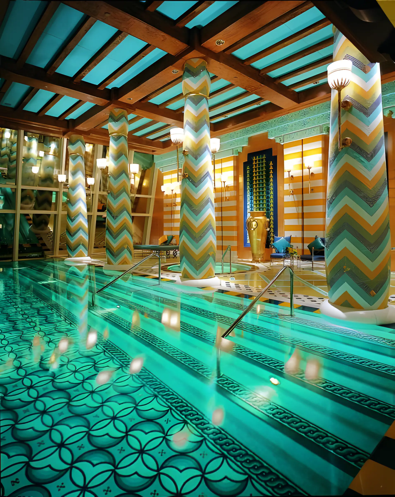
مسابح ونوافير ومسطحات مائية في أرجاء الفندق.
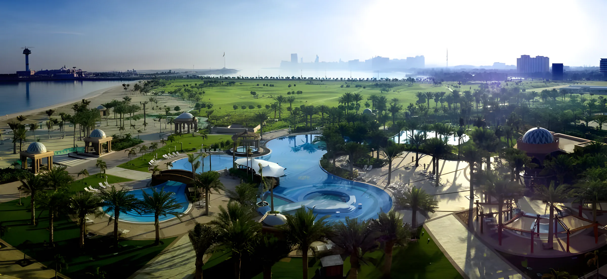
نفذنا تشطيبات الأنفاق والنهر الكسول بالرش (Gunite) بخلطة خاصة مستوردة من الولايات المتحدة، إضافة إلى الأعمال المدنية لمسبح الأنشطة ونافورة المدخل.

كسوة نافورتين داخليتين كبيرتين بحجر البازلت، ونافورتان خارجيتان تعمل فيهما الفوهات بالتزامن مع إضاءة متغيرة الألوان.
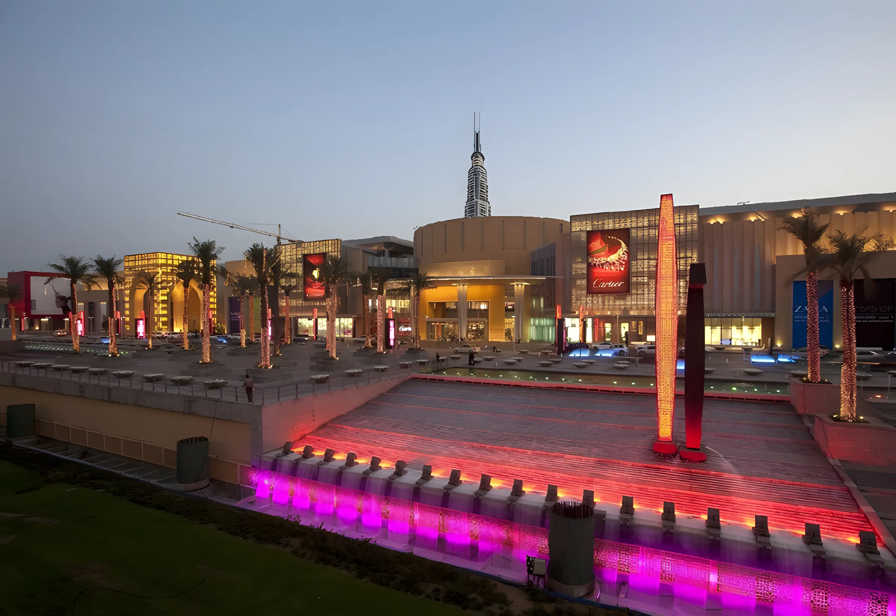
هيكل فولاذي بارتفاع خمسة طوابق يحمل سلاسل نافورة الصنوج، والماء ينساب على صنوج موسيقية في الأسفل.

نافورة الردهة من أكثر أعمالنا التي نفخر بها، وظهرت مع الفندق في فيلم Mission Impossible 4.

الشلال الكبير خلف المصاعد المؤدية إلى السوق الحرة احتاج أنابيب حديد مجلفن بقطر يصل إلى 500 مم، ومرشحات D.E. ومضخات حتى 55 كيلوواط.
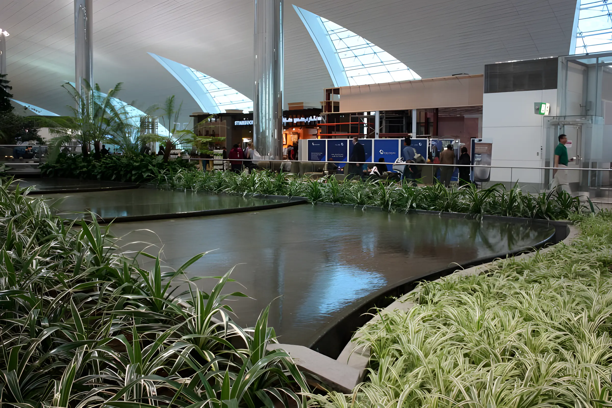
لوح أكريليك معلّق على طول الحافة الخارجية للمسبح يجعل الماء يبدو ممتداً فوق مضمار السباق، نفذناه مع Reynolds Polymer Technology الأمريكية.
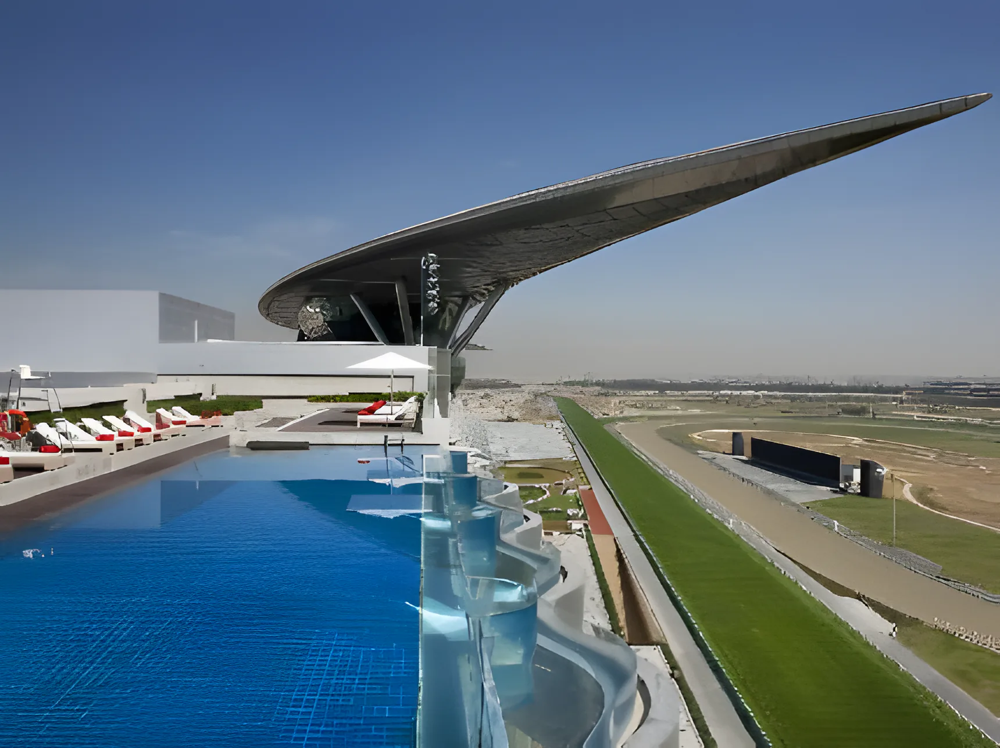
كل النوافير في التوسعة من تنفيذنا، مع الأعمال الكهروميكانيكية للمسابح.
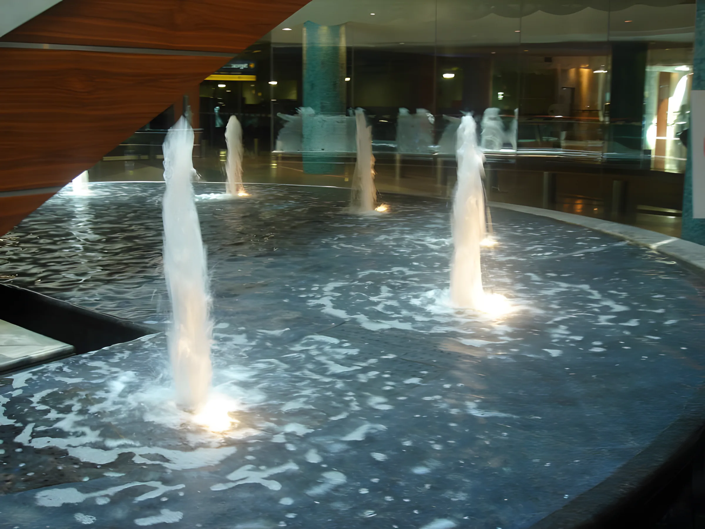
واحة وسط الصحراء: نفذنا عدداً من مسابح المنتجع، ثم مسابح التوسعة.
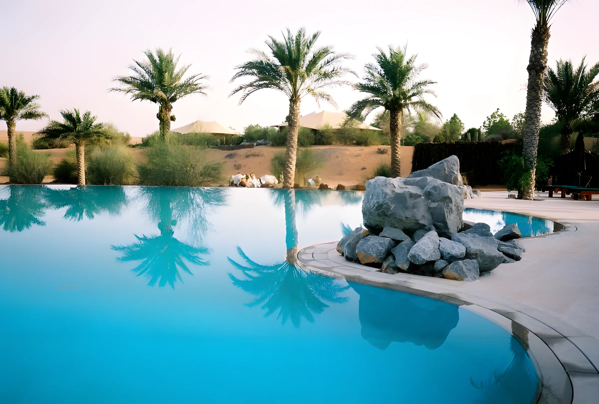
شلال المسبح مرتبط بساعة الفندق: لكل ساعة من الاثنتي عشرة فوهة خاصة بها، ففي العاشرة صباحاً تعمل عشر فوهات.

فاز المسبح بجائزة تايم آوت دبي لأفضل مسبح سباحة في فندق عام 2011.
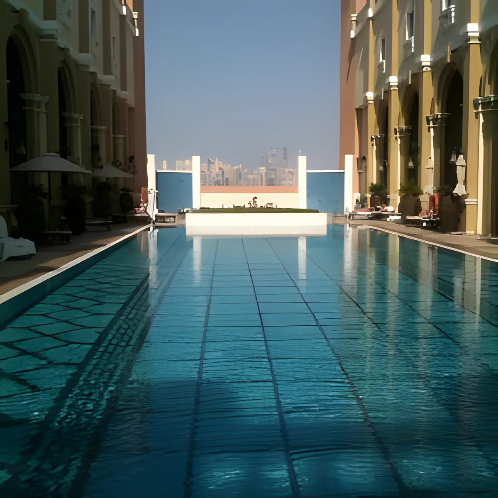
الماء له رأيه. أغلب شغلنا أن نجعله ينزل بانتظام، ويبقى بعيداً عن المتفرجين، ويشتغل في وقته.
قبل كأس دبي العالمي 2010 طلبت منا ميدان تركيب نافورة مضاءة بارتفاع 22 متراً عند البوت هاوس، في وقت قياسي مدته 48 ساعة. وأنجزناها.
لو انحرفت كسوة البازلت درجة واحدة لقذف الجدار الماء على المتسوقين. والحوض العلوي كان لازم يكون مستوياً تقريباً بالكامل حتى ينزل الشلال بالتساوي على طوله.

النافورة الرئيسية تحمل الدرج من الطابق الأرضي إلى الأول، وأعلاها غير مستوٍ. ومع ذلك وصلنا إلى انسياب متساوٍ في أحواضها الأربعة.
أراد الفندق فصل مسبح الأطفال عن المسبح الرئيسي بجدار من الأكريليك، فنفذناه مع شركة BKIO Acrylic الماليزية.
يأتينا المعماريون والاستشاريون والمطورون وأصحاب البيوت في أي مرحلة، من أرض فاضية والحفر إلى تعبئة المسبح وتشغيله.
تفاصيل الخدماتمسابح جديدة للفنادق والمجمعات والفلل، وتصميم واستشارة جنباً إلى جنب مع مهندسك.
نوافير راقصة وموسيقية وجافة، شلالات وجدران مائية، ونوافير مع النار.
أحواض السبا، الساونا والبخار، الأنهار الكسولة والبحيرات والبرك.
منذ 2010: الأرضيات الخشبية والبرجولات وأماكن الشواء والري والإنارة.
العناية بمياه المسابح والنوافير والبحيرات وبرك أسماك الكوي.
إعادة التبليط والعزل، تقليل العمق، والتحويل إلى مسبح فائض، وكشف التسريبات.
اتصل بنا لزيارة مجانية من أحد فنيّينا. إذا كانت أي من هذه المشاكل عندك، فقد رأيناها من قبل.

قبل ما تفضّي المسبحلا تفرغ المسبح الأخضر وتعبّيه بماء جديد. نقدر نرجّع نفس الماء صافياً، ونفحصه في مختبر معتمد لنثبت لك النتيجة.
مكتب P05، باي سكوير مبنى 3، الخليج التجاري، دبي
المكتب الرئيسي. ص.ب 5697، دبي.
| السبت | 8:00 – 5:15 |
| الأحد | مغلق |
| الاثنين | 8:00 – 5:15 |
| الثلاثاء | 8:00 – 5:15 |
| الأربعاء | 8:00 – 5:15 |
| الخميس | 8:00 – 5:15 |
| الجمعة | 8:00 – 5:15 |
شارع الكويت، مقابل مبنى عُمان للتأمين
04 359 1015 · showroom@poolsuae.com
الطابق العاشر، شقة 1004، مبنى ميكو، شارع النجدة، بجانب بنك ستاندرد تشارترد. ص.ب 41957
02 677 5770 · poolsuae@eim.ae